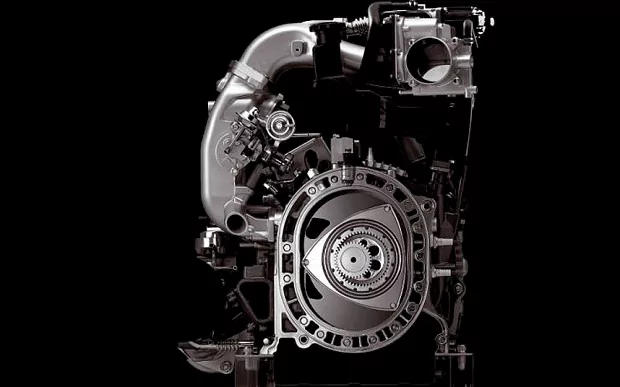

The 'rotary' engine.
Play the audio segment for an example of rotary engined Le Mans racecar start-up:
The Wankel rotary engine is not your typical cylinder/piston scenario. By the cross-section shown below your can see a triangluar shape which drives the eccentric shaft within. This probably means nothing to you yet.
This animation shows the Wankel in action. As the triangular rotor goes around there is a cycle of combustion.
Upon the 'intake' phase a mixture of gaseous fuel and air is input into one of the temporal cavities between the triangular rotor and the rotor housing.
As the rotor momentum drives it round (there is also likely to be at least one other rotor operating on the same eccentric shaft within a different housing, with an advanced or retarded timing compared to the rotor in question) the fuel/air mix reaches the compression stage.
Where the rotor is driven around the '8' figure the gas is forced to compress into a shrinking space.
As the cavity reaches it's smallest point the gas is split into 2 segments by contact point of the housing on the rotor - 2 spark plugs then detonate the fuel in the air.
The expansion of the gas under combuston pushes the rotor around as the gas seeks a way to dissipate it's pressure in a larger cavity - the ignition phase (this is where the drive comes from).
As the gases' energy is dissipated turning the rotor around, it reaches the exhaust phase where an exhaust port allows the excess gas (now not sufficiently pressurised) to escape.